Data Preparation and Exploratory Data Analysis
Every live music event listed in Colorado for the coming year was collected from the Ticketmaster Discovery API, archived, parsed into twelve relational tables, cleaned against four defects found in the data itself, and verified by twenty-seven automated checks. 1,190 raw listings became 1,020 distinct live events at 68 venues, 152 of them electronic.
Why this data, and how it was chosen
The topic requires a record of what is playing, where, and by whom. Three properties matter: the data must cover a whole regional market rather than a selection of it, it must identify the artists on each bill and not only the event, and it must carry some notion of musical style. Artist identity is essential because a bill is a curatorial judgment, and two artists sharing a stage is the basic unit of evidence this project is built on.
Bandsintown was the first candidate, and it failed on access rather than on content. An artist API key issued to a performing act returns events for that one act only; twenty-four variations of the events endpoint were tested and every one of them enforced the same restriction. A written request to Bandsintown for broader research access for an academic thesis was declined. That refusal is recorded here because it determined the shape of the project rather than merely delaying it.
The Ticketmaster Discovery API was selected instead. It is open, documented, returns events for an entire state without a per-artist restriction, and attaches a three-level genre taxonomy (segment → genre → subgenre) to both events and artists. That taxonomy is the label this project depends on. The trade is coverage: Ticketmaster sees events ticketed through its own platform, so venues selling through other services or at the door are absent. That boundary is quantified under limitations.
The API
- Provider: Ticketmaster Discovery API v2
- Base URL:
https://app.ticketmaster.com/discovery/v2/ - Core endpoint used:
GET /discovery/v2/events.json - Supporting endpoints:
/attractions(artists),/venues,/classifications(the genre taxonomy) - Authentication: an API key passed as the
apikeyquery parameter. The key is stored in a local.envfile, is never committed, and is stripped from every archived response before it is written to disk. - Limits: 5,000 requests per day, five per second, and a hard paging cap where page × size must stay below 1,000.
A complete request of the kind this project issues, retrieving every music event in Colorado during October 2026:
https://app.ticketmaster.com/discovery/v2/events.json?apikey=YOUR_KEY&stateCode=CO&segmentId=KZFzniwnSyZfZ7v7nJ&startDateTime=2026-10-01T00:00:00Z&endDateTime=2026-10-31T23:59:59Z&size=200&page=0&sort=date,asc
segmentId=KZFzniwnSyZfZ7v7nJ is Ticketmaster's identifier for the
Music segment, and KnvZfZ7vAvF is the Dance/Electronic genre
within it. The genre filter is deliberately not applied at
collection: all Colorado music is retrieved and the electronic subset is
identified afterwards, because a recommender needs to know what a listener
did not choose as well as what they did, and because a venue's genre mix is
only meaningful when the whole mix is visible.
The data
Raw responses are archived exactly as returned, before any parsing. Nothing in the pipeline re-queries the API to correct a parsing error; a parser bug is fixed by re-running the parser over the archive. This was relied on twice while the schema was still changing.
- Raw API responses. Every response is archived locally as
gzipped JSON Lines, one file per collection date, under
raw/. The archives themselves are not published, because responses captured before credential redaction was added carry the API key inside the responseurlfield. The two redacted samples below show the exact structure, andexports/events_raw.csvis the complete raw table with every field, unmodified. - One untouched event record, pretty-printed: raw/sample/ticketmaster_event_sample.json
- One complete response envelope, showing paging metadata: raw/sample/ticketmaster_response_sample.json
- Parsed raw events, before cleaning: exports/events_raw.csv
- Cleaned events: exports/events_clean.csv
- Venues: exports/venues.csv · Artists: exports/attractions.csv · Lineups: exports/event_attractions.csv
- Genre taxonomy: exports/classifications.csv · Weekly observations: exports/event_observations.csv
Collection
Three obstacles had to be handled before any row was stored.
The paging cap. Ticketmaster refuses any request where page × size reaches 1,000, so a query matching more than a thousand events cannot be read to the end. The collector requests one month at a time; if a month still reports more than a thousand results it is split in half and the halves are requested separately, recursively, down to single days if necessary. Every slice is written to a collection log with a flag recording whether it was truncated, so silent loss becomes visible.
Quota. The client throttles itself below five requests per second and tracks remaining daily quota, raising an explicit error rather than failing quietly. A full twelve-month collection of Colorado costs 16 requests of the 5,000 available.
Repetition. Development means running the same collection repeatedly. Responses are cached locally with a lifetime chosen by how far ahead the query reaches: a window entirely in the past cannot gain events and is held ninety days; the next sixty days change daily and are held twelve hours; anything further ahead is held three days. The second run of a completed collection costs zero API requests.
From responses to tables
The parser writes to twelve tables — events, venues, artists, the lineup linking them, all classifications, the genre taxonomy, a collection log, the response cache, an observation log, the cleaned output, and a record of each run. It makes no network calls, which is what makes every cleaning decision below cheap to revise.
The current database holds 1,190 events, 81 venue records, 1,237 artists, 1,799 lineup rows, 5,037 external artist links and 1,095 taxonomy rows, covering September 2026 to September 2027.
Before and after
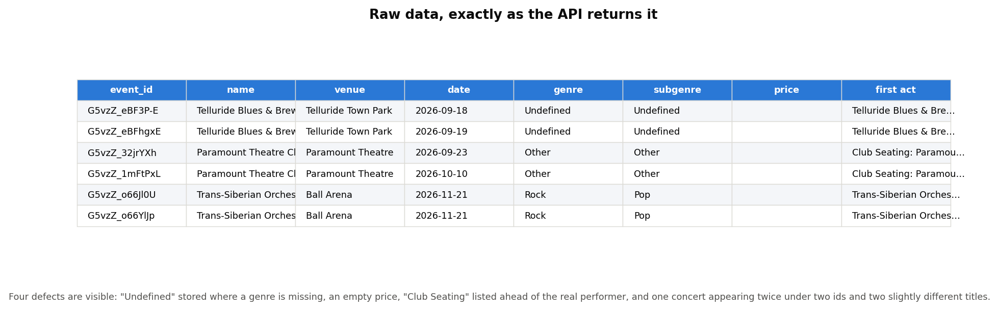
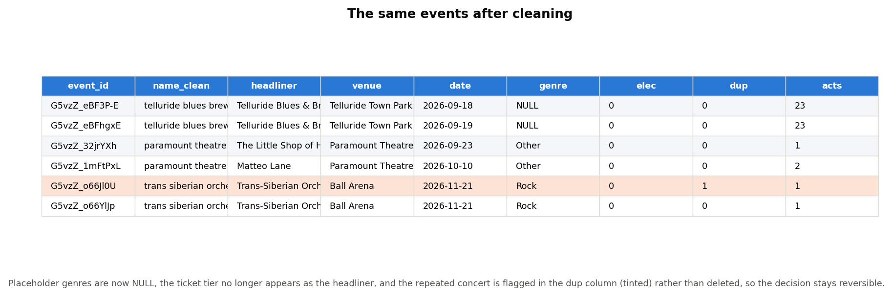
Cleaning
Four defects appear in this data. Each was found by inspecting output rather than anticipated in advance, and each is handled in a stage that writes to a separate table, so the parsed raw data is never overwritten.
1. Missing values stored as text. Ticketmaster writes the strings "Undefined" and "None" into genre and subgenre rather than leaving them empty. Left untreated they appear as legitimate genre categories in every chart on this page. They are converted to true nulls, along with "N/A", "Unknown" and the empty string.
2. One building listed under several identifiers. "Meow Wolf Denver" and "Meow Wolf Denver Convergence Station" are one address hosting one set of shows. More surprisingly, Ticketmaster also issues multiple records with identical names: Red Rocks Amphitheatre, Bellco Theatre and Pikes Peak Center each appear twice, and Black Sheep three times. Because duplicate detection keys on the venue, two identifiers for one building make duplicates structurally undetectable. Venue records in the same city are merged when one name is a word-boundary prefix of the other, joining 12 families and reducing 81 venue records to 68 real buildings. The prefix test is deliberately strict: "Club Vinyl", "The Basement at Club Vinyl" and "The Rooftop at Vinyl" are three genuinely separate rooms and remain separate.
3. Ticket tiers listed as performers. Twenty-eight listings carry an "artist" named Club Seating: Paramount Theatre, which sorts ahead of the real act. The headlining artist, and therefore the duplicate key, came out wrong on every one of them. Entries whose names begin with a ticket or venue-service phrase are removed from the lineup before the headliner is selected, which also corrects the artist count on those events.
4. The same concert listed more than once. Ticketmaster issues separate identifiers for what an attendee would call one show: different ticket tiers, re-listings after a reschedule, or a promoter posting again with a longer title. A show is identified by its canonical venue, its date and its headlining artist; where no artist is attached, the event title is used with promotional words removed. Listings whose identity is a word-boundary prefix of another on the same night are merged, so "Broadway Rave" and "Broadway Rave - The Musical Theatre Dance Party" resolve to one event. Within each group the richest row survives — most artists, then a published price — and the rest are flagged rather than deleted.
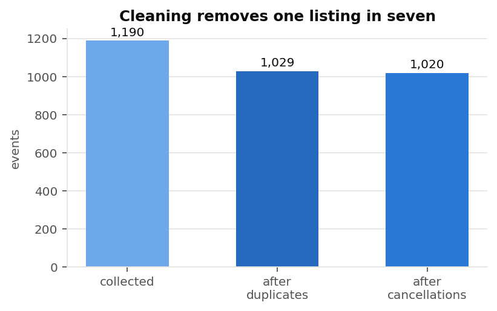
Missing, incorrect and extreme values
Each incomplete field is handled explicitly rather than dropped or filled, and the treatment differs because the reason for the absence differs.
- Placeholder genres (11 events) become null, so they are counted as missing rather than as a category.
- Price is absent for 83% of events. It is retained in the data but excluded as a model feature and never imputed, because the missingness is not random: large ticketed concerts publish prices and small club nights do not, so any imputed value would encode venue size rather than cost.
- Artist lineup is absent for 17% of events, recorded as a lineup size of zero rather than as a null, since "no artist credited" is a real and informative state.
- Genre recorded as "Other" (277 events) is kept as its own category rather than converted to missing, because Ticketmaster uses it as a genuine bucket. The completeness figure below separates the field being populated from the value being informative.
- Incorrect values are tested rather than assumed: no event has a minimum price above its maximum, no negative prices occur, every date parses as a valid calendar date, and no event goes on sale after it takes place.
- Extreme values are inspected, not trimmed. On-sale lead times beyond 400 days are excluded from the histogram below for readability only; they remain in the dataset, because a show announced a year ahead is a real phenomenon rather than an error.
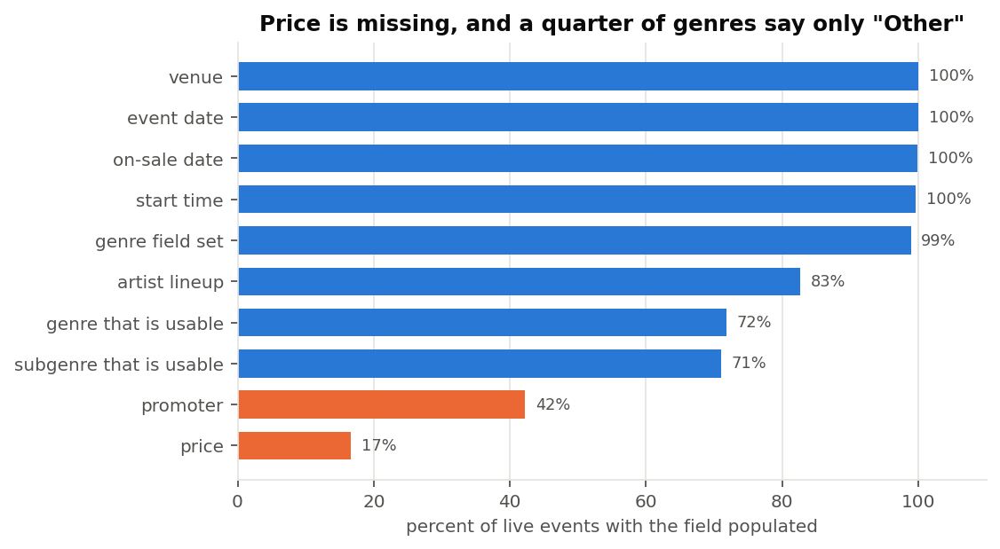
Labelling an event electronic
The project needs to know which events are electronic, and the event's own genre field is not sufficient. An event is treated as electronic when its genre is Dance/Electronic, or its subgenre is one of a list of electronic styles, or any artist on the bill is classified as Dance/Electronic.
The third rule carries a quarter of the label. Amelie Lens, Mild Minds and Desert Dwellers all play Colorado dates that Ticketmaster files under something other than Dance/Electronic; the artist record is correct where the event record is not.
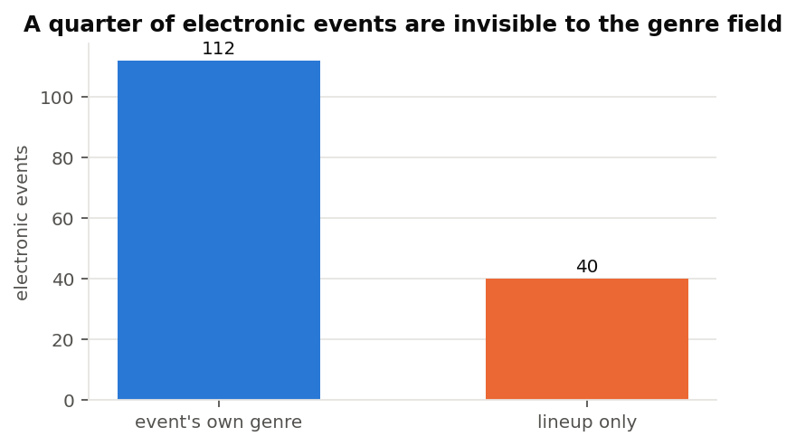
Two deliberate exclusions are recorded. Trap is not treated as electronic, because Ticketmaster files it under Hip-Hop/Rap far more often than under Dance/Electronic, and including it drew rap bills into the electronic set. The label also inherits errors from the source: a nu-metal night and an Alter Bridge show are both classified as Dance/Electronic by Ticketmaster itself. Two errors in 152 is approximately 98% precision, and the error belongs to the source data rather than to the cleaning.
Verification
Cleaning that is not checked is only a claim, so the pipeline ends with an audit that re-derives the cleaning decisions independently and compares them against what was stored. A rule that silently stops firing therefore fails a check instead of producing a plausible number.
Twenty-seven checks cover coverage, referential integrity between all six tables, duplicate-group collisions, venue records left unmerged, placeholder strings surviving as genres, the electronic flag recomputed from scratch, artist counts, date and price sanity, and observation coverage. The current result is 27 passed, 0 failures. The audit also gates publication: when it fails, the upload to the hosted database does not run.
Exploratory analysis
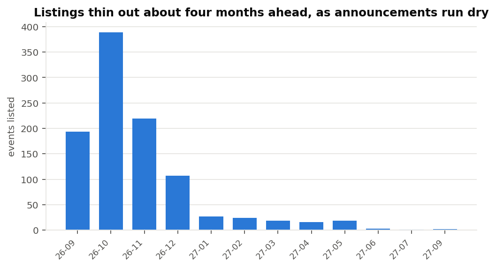
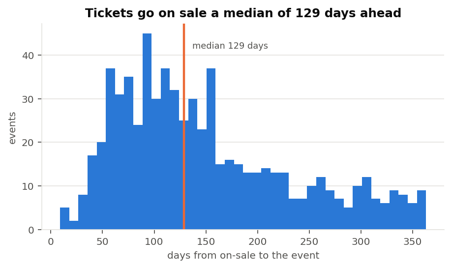
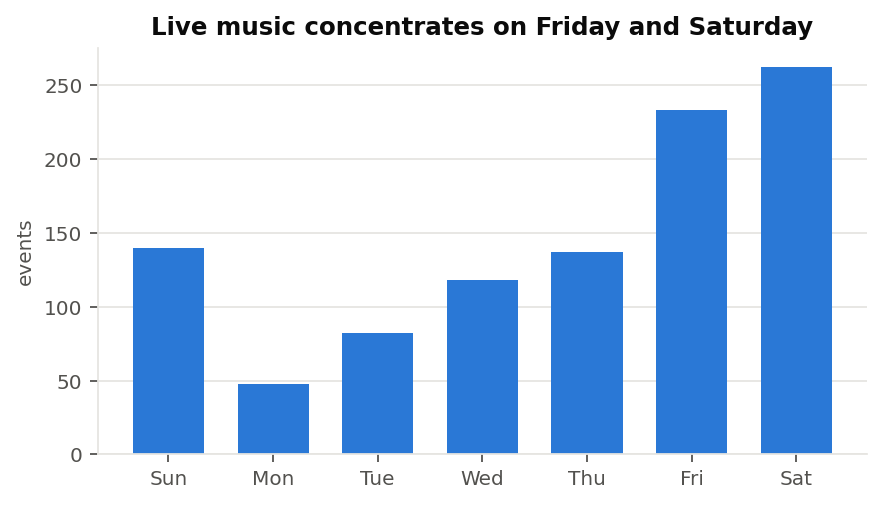
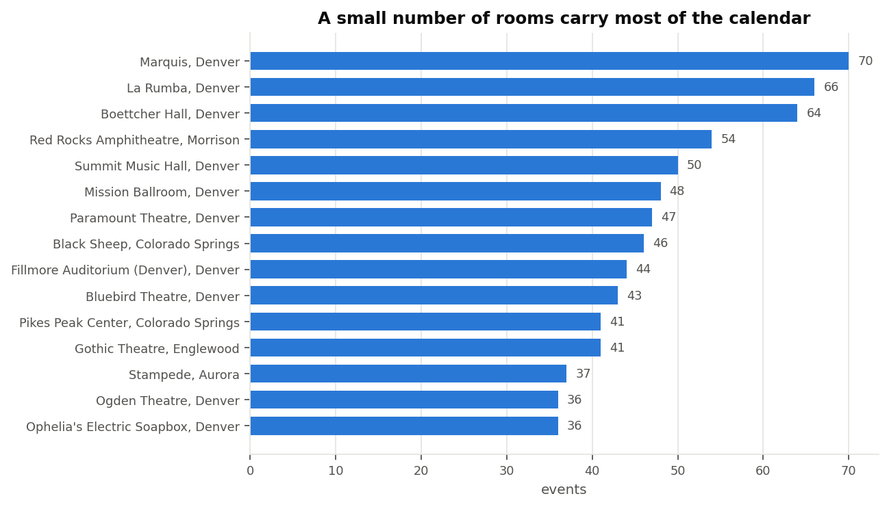
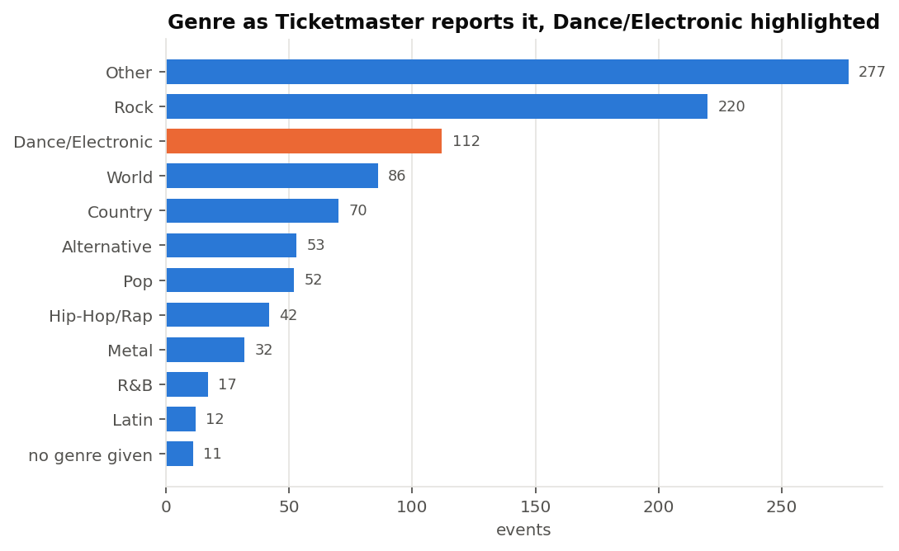
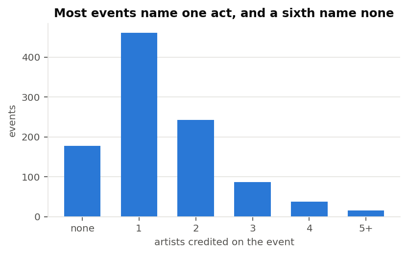
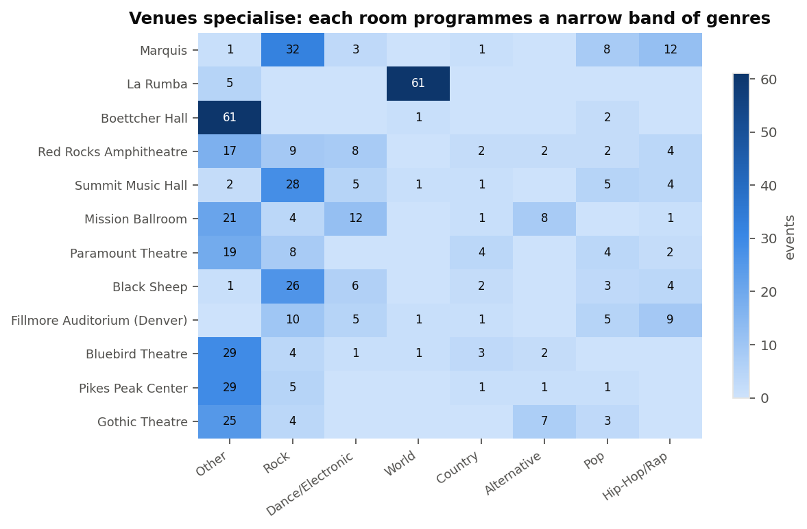
Building a record over time
Ticketmaster is a live ticketing feed rather than an archive. Events disappear once they go off sale, prices and status change while they are listed, and no endpoint returns what an event looked like last month.
Every collection therefore appends one row per event to an observation log, recording status, price, lineup size and distance from the event date at that moment. The log is append-only and cannot be backfilled, so it exists only for the weeks collection actually ran. Its value is already visible: 69 events in the database are no longer in the live feed and 51 have already taken place. Those records exist only because they were captured.
The pipeline runs weekly as a single scheduled command — collect, parse, observe, clean, audit, publish. Over a year this converts a snapshot of 1,020 events into a longitudinal record of how a regional music calendar fills up.
Where the data is stored
Working data is a local SQLite database. The cleaned result is published to a hosted PostgreSQL database on Supabase, currently 11,629 rows across eight tables, together with four views expressing the questions the models will ask: usable events, electronic events, the history of each event across observations, and the genre mix of each venue. Current state is upserted so that re-running is harmless, while observations are appended and never overwritten.
Code
Written in Python 3. Core packages: requests for
the API, the standard-library sqlite3 for storage,
matplotlib for the figures, and python-dotenv for
credential handling. Every file below is in the
project repository.
- src/config.py — settings and credentials, in one place
- src/db.py — the twelve-table schema
- src/tm_client.py — API client, throttling, quota, raw archiving
- src/cache.py — response cache with distance-based lifetimes
- src/collect_events.py — recursive date slicing around the paging cap
- src/normalize_tm.py — archived responses into relational tables
- src/clean.py — the four cleaning stages described above
- src/audit.py — the twenty-seven verification checks
- src/supabase_sync.py — publication to the hosted database
- src/weekly_run.py — the scheduled job that runs all of the above
- figures.py — every figure on this page
- export_data.py — the CSV exports and the before/after images
- supabase_schema.sql — the hosted schema and views
What this data cannot show
Coverage is partial. Ticketmaster lists events ticketed through its own platform. A substantial part of Colorado's electronic scene sells through other services or at the door, so conclusions drawn here describe the ticketed market rather than the whole scene.
There are no users. This dataset describes events, not the people attending them. It supports content-based and graph-based recommendation, but not collaborative filtering, because no interaction history exists. Obtaining a listener signal is the main open problem for the next stage of the project.
The labels are imperfect. Genre comes from Ticketmaster, and Ticketmaster is occasionally wrong; 27% of events carry no informative genre at all. The lineup rule repairs part of this, but the ground truth is noisy and any accuracy figure reported later must be read with that in mind.
The history is short. The observation log begins on the day collection began. Questions about how prices move or how quickly shows sell out cannot be answered yet, only posed and waited on.